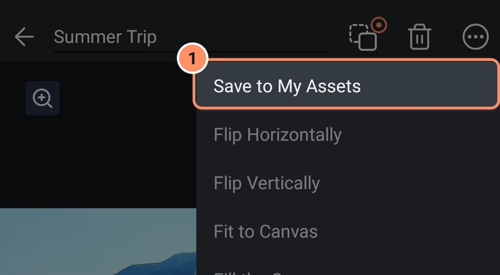
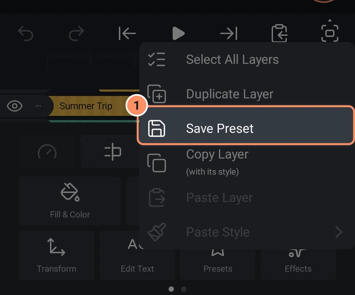

アセット、テンプレート、プリセット
自分のベストな作品を再利用しましょう。レイヤーをアセットとして保存し、テンプレートから始めて、お気に入りの見た目をプリセットとして残せます。
AbsentMotionには作品を再利用する3つの方法があります。それぞれ保持する内容が異なります。
| 保持する内容 | 使用する場所 | |
|---|---|---|
| アセット | レイヤーまたはアニメーション全体（ソースにリンク） | 追加メニュー、オブジェクト／アセット |
| テンプレート | プロジェクト全体（自分のメディアに差し替える場所あり） | 追加メニュー、テンプレート；ホーム画面、テンプレート |
| プリセット | 1つのレイヤーの見た目と動き（エフェクト、キーフレーム、枠線、ブレンドモードなど） | ツールグリッド、プリセット |
アセット
アセットを作る
- エディターでレイヤーまたはグループを選択し、レイヤーメニューのマイアセットに保存を選びます。「マイアセットに保存しました」と表示されます。
- ホーム画面で新規プロジェクトのシートのアセットを選び、専用のプロジェクトでアニメーションを作ります。アセットプロジェクトの背景は透明です。

アセットはホーム画面のアセットチップに表示されます。
アセットを使う
追加、オブジェクト／アセット、アセット/プロジェクトにアセット（新しい順）、続いて他のプロジェクトが検索ボックス付きで表示されます。1つをタップすると、再生ヘッドの位置にグループとして挿入されます。アセットは元のアセットにリンクされたままです。この方法で挿入したプロジェクトは、代わりに独立した通常のコピーになります。
リンクされたレイヤーにはアセットのプロパティツールがあり、2つのボタンがあります。
- 元のアセットを開くはアセット自身のプロジェクトを開くので、変更できます。そのプロジェクトが削除されている場合、アプリは元のプロジェクトを再構築（このレイヤーからプロジェクトを作る）またはアセットとのリンクを解除を提案します。
- アセットとのリンクを解除すると、レイヤーは自由に編集できる通常のグループになります。
アセットプロジェクト
アセットプロジェクト内では、プロジェクト設定シートにさらに2つの行があります。
- プリコンポーズでアセットの適応解像度または固定解像度を選びます。
- リタイミングで、アセットを元の長さより長いクリップに置いたときの動作を決めます：フリーズ（中間部分の最後のフレームを保持）、ストレッチ、ループ、繰り返しとストレッチ、空白（元の長さより後は何もなし）。
コピー＆ペーストメニューにはイントロの終了を設定とアウトロの開始を設定も追加されます。これらはルーラーに金色のフラグを置きます：イントロ終了より前とアウトロ開始より後の部分は実際の速度を保ち、中間部分はストレッチ、ループ、フリーズされます。
テンプレート
テンプレートは、すべての画像や動画が差し替え可能なスロットになっている完成済みプロジェクトです。
テンプレートを使う
- ホーム画面でテンプレートページとマイテンプレートチップを開き、テンプレートをタップします。エディター内からは、代わりに追加、テンプレートを使えます。
- テンプレートを使用画面にプレビューとメディアスロットの行が表示されます。スロットをタップして選択し（再生ヘッドが開始位置に移動します）、もう一度タップして自分の写真や動画を選びます。
- スロットの隅のアイコンでメディアの拡大方法を変更します：塗り、合わせる、ストレッチ。
- 動画がスロットより長い場合、ドラッグして選択という画面で使用する部分を選べます。短い場合は最後のフレームが保持され、アプリがそのことを知らせます。
- 次へをタップし、続いてタイムラインへをタップします。新しいプロジェクトが作成されます。テンプレート自体は変更されません。
テンプレートのメニューのプロジェクトとして開くは差し替え画面を飛ばして、すぐに新しいプロジェクトを作ります。テンプレートはそのメニューから名前の変更と削除もできます。
テンプレートを作る
- 書き出しの前に、書き出し画面のテンプレートとしてコピーも保存スイッチをオンにします。書き出しが成功した後、この端末のテンプレートにメディア付きのプロジェクトが保存されます。
- 他のエディターからインポートしたパッケージはテンプレートとして届きます：プロジェクト、バックアップ、インポートをご覧ください。
プリセット
プリセットはレイヤーの見た目を保持し、別のレイヤーに適用できるようにします。
プリセットを保存する
レイヤーを選択し、コピー＆ペーストメニュー（再生バーの6番目のボタン）でプリセットを保存を選びます。保持する内容がある場合にのみ使用できます：ストローク、枠線、影、エフェクト、通常以外のブレンドモード、変更された不透明度、アニメーションする位置やサイズ、変更された音量や速度、変更されたフォントなどです。保存後、名前を付けることができます。

プリセットを使う
別のレイヤーを選択し、ツールグリッドのプリセットをタップします。プリセットを試す画面に、プリセットを適用したレイヤーだけが表示されます。プリセットをタップして試し、プレビューをタップして再生し、適用をタップして保持します。各プリセットのメニューには名前を変更と削除があります。
プリセットは枠線、影、ブレンドモード、不透明度、アニメーションするトランスフォーム、エフェクト、テキストスタイル（テキストからテキスト）、音量と音声エフェクト（音声から音声）、速度（クリップからクリップ）を置き換えます。塗りの色、図形、内容、タイミングは変更しません。
組み込みのプリセットはありません。保存したものだけです。ホーム画面のテンプレート、マイプリセットに一覧表示され、名前の変更と削除ができます。